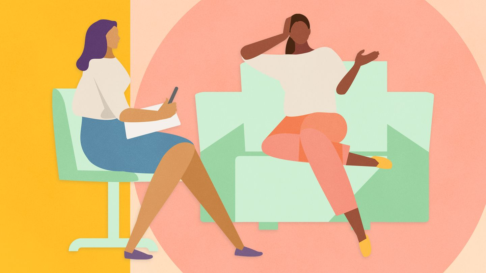

Blogs
Blogs on mental wellness provide valuable education, support, and practical advice for individuals facing mental health challenges.
They help increase awareness and understanding of mental health issues, while also offering a sense of validation and community for readers.
These blogs often share personal stories of recovery and resilience, inspiring and motivating others to take steps towards improving their mental well-being.
Additionally, they provide practical tips for managing symptoms and coping with stress, anxiety, depression, and other conditions. Overall, mental health blogs serve as a powerful resource for those seeking information, support, and connection in their mental health journey.
Noise treatment
Noise therapy, also known as sound therapy or sound healing, is a holistic approach that uses various sounds to improve mental health and well-being. This therapy can involve listening to specific types of music, nature sounds, white noise, or even rhythmic drumming. The goal of noise therapy is to create a calming and relaxing environment, which can help reduce stress, anxiety, and insomnia. Some studies suggest that noise therapy can also improve focus, enhance mood, and promote a sense of inner peace. It is often used as a complementary treatment alongside other therapies for mental health conditions.
Personal Therapist
Therapists play a crucial role in mental health by providing professional guidance and support to individuals experiencing emotional or psychological difficulties. They are trained to help people explore their feelings, thoughts, and behaviors, and to develop coping strategies and solutions to manage their challenges. Therapists use various therapeutic approaches, such as cognitive-behavioral therapy (CBT), psychotherapy, and counseling, tailored to the specific needs of their clients. Their role is to create a safe and nonjudgmental space for clients to express themselves, gain insights into their problems, and work towards positive changes in their lives. Therapists also provide education about mental health issues and can collaborate with other healthcare providers to ensure comprehensive care for their clients.
Common treatments
The following are common treatments that we encourage our clients to do as part of their daily routine.
- Deep breathing
- Practice deep breathing exercises to help reduce stress and anxiety. Inhale deeply through your nose, hold for a few seconds, and exhale slowly through your mouth. View Example.
- Mindfullness Meditation
- Set aside a few minutes each day to practice mindfulness meditation. Focus on your breath or on sensations in your body, and gently bring your attention back whenever your mind wanders. View Example.
- Gratitude Journaling
- Keep a journal and write down three things you're grateful for each day. This practice can help shift your focus to the positive aspects of your life. View Example.